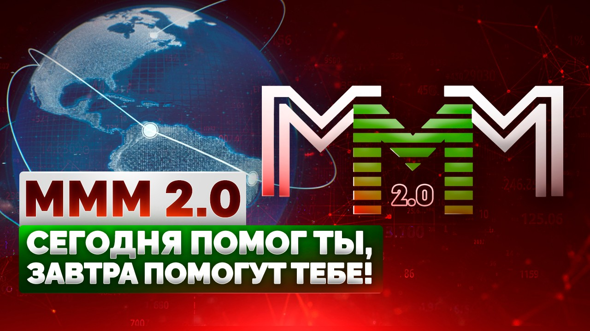

Регистрация в телеграм-боте: @Mavrodi_robot

Итак, сейчас уже грандиозные и поистине апокалиптические масштабы кризиса для всех практически становятся очевидными. Всё чаще и чаще звучат даже немыслимые ещё недавно совсем заявления, что только-де новая мировая война спасёт США от глобальной катастрофы и т.п.
В этой связи возникает интересный вопрос. Хорошо. Мировая война. Ужасно, конечно, но что это, собственно, такое с точки зрения экономики и чем она так уж для неё полезна?

На первый взгляд, вроде бы, ответ очевиден. Гигантские правительственные заказы для промышленности, новые рабочие места и пр. и пр. Нет даже смысла углубляться.
Но тогда сразу же возникает следующий вопрос. Если это действительно так, и рецепт возрождения общества и выхода из кризиса настолько прост, то почему бы им в действительности и не воспользоваться?
Только зачем нужна именно РЕАЛЬНАЯ война? Реальные смерти, кровь и прочие страсти и кошмары? Объявите виртуальную войну. Кому угодно! Виртуальному противнику, инопланетянам, да не суть! Главное, делайте заказы промышленности, пусть она работает на полную мощность, выпускает военную технику, а вы просто отвозите её на полигоны, взрывайте там, сжигайте и заказывайте новую. В чём, собственно, отличие ТАКОЙ «войны» от реальной? С точки зрения экономики − ни в чём.
А между тем интуитивно ясно, что рецепт этот работать не будет. Почему? Вот! Мы и подошли к главному. Да потому, что дело-то вовсе не в войне. Война − это просто фасад, декорации, за которыми скрывается суть. А она-то вот − поистине ужасна. До такой степени, что взглянуть на неё люди просто не решаются и в безотчётном страхе отводят глаза.
Увы! В силу целого ряда причин, даже и не важно уже сейчас, каких именно (это и бездарное руководство, и «головокружение от успехов», и чисто стратегические ошибки и просчёты, и пр., и пр.), но мы к настоящему моменту проели и растранжирили почти всё, что создали для нас предки. Мы − это не Россия, это весь мир!
И теперь мы должны за это расплачиваться. Всё это восстанавливать и вновь создавать. Отказывая себе во всём! Впереди − годы и годы лишений, недоедания, нищеты и т.д. и т.п. Мы, наши дети и внуки − всё это потерянные поколения, которые обречены всем этим заниматься. Лишь для того только, чтобы какие-то будущие поколения вновь всё проели и растранжирили и начали всё сначала. Это и есть суть. И это и есть − история.
А война, повторяю, это всего лишь декорации. Они могут быть любыми. Не обязательно война. К примеру, в СССР − это были стройки века, целина и т.п. Просто нужна идея, сверх-идея! ради которой все бы объединились и сплотились в трудный момент! Ради которой согласились бы страдать, голодать, холодать и пр. и пр. А уж какая именно она будет, эта идея, сиё абсолютно несущественно. «Победа над врагом» ли, «коммунизм» или что-то ещё. Не имеет значения! Главное, чтобы все работали, работали, работали! Причём, добросовестно и практически бесплатно. Годами! Десятилетиями!! Целыми поколениями!!!
(Иное дело, что её очень трудно найти, ТАКУЮ идею, но это уже другой вопрос. Вот «победа над врагом» − тут всё ясно, а другую-то − как отыщешь? :-))
И это ещё всё − самый радужный и оптимистический сценарий. Основанный на вере, что нынешний кризис − один из многих, и он тоже когда-нибудь закончится. Что, на самом-то деле, далеко не очевидно.
Ладно. На этом пока и закончим, пожалуй. Будет настроение − продолжу. Насчёт идеи, в частности. Поскольку это, собственно, тема для отдельного разговора. :-))
Сергей Мавроди, 24 декабря 2008 год
Регистрация в телеграм-боте: @Mavrodi_robot